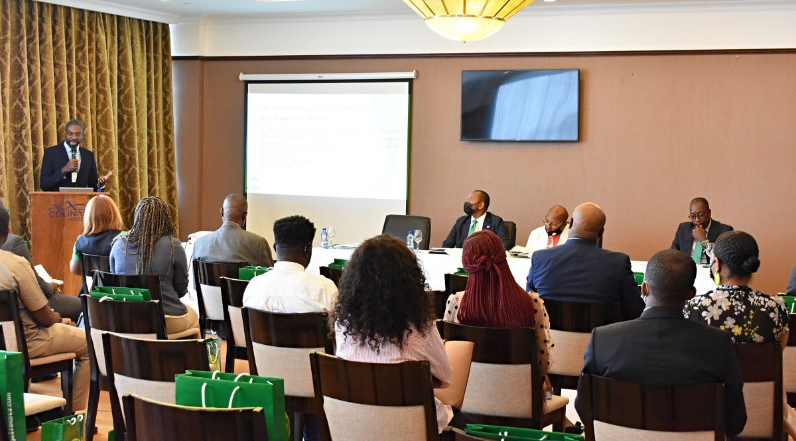
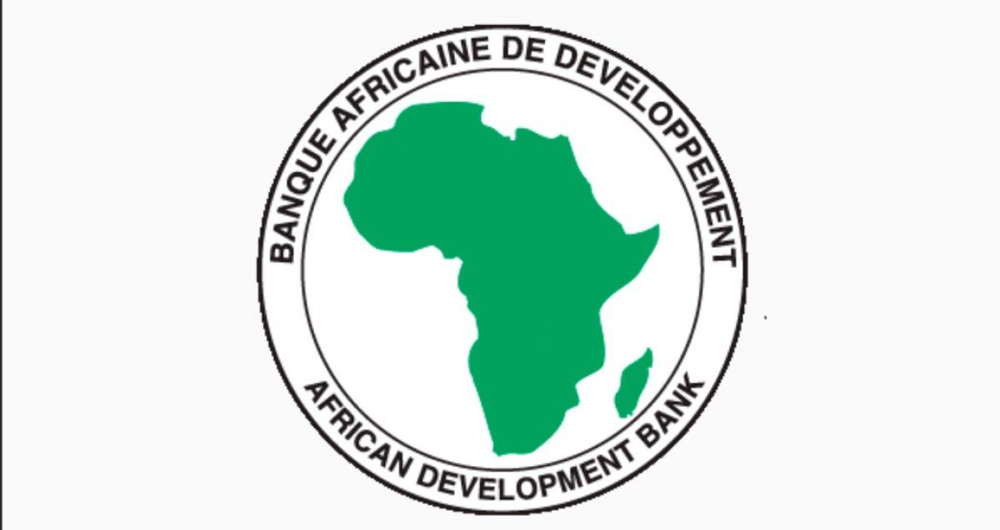

Экономический и финансовый комитет Республики Экваториальная Гвинея провел очередное заседание в формате видеоконференции и лично в понедельник, 14 марта, под председательством заместителя министра финансов, экономики и планирования Гермеса Эла Мифуми и при участии губернатора из Банка центральноафриканских государств Аббас Махамат Толли.
Президент Группы Африканского банка развития Акинвуми А. Адесина примет участие в шестом саммите Европейского союза и Африканского союза (ЕС-АС), который состоится на этой неделе в Брюсселе. Ожидается, что он призовет к улучшению доступа к вакцинам против Covid-19 и перераспределению в Африку 100 миллиардов долларов в виде специальных прав заимствования (СПЗ) Международного валютного фонда. Президент будет настаивать на том, чтобы эти СДР были направлены Африканскому банку развития, их полномочному держателю.
Вслед за 35-м саммитом Африканского союза в Аддис-Абебе, на котором была принята резолюция, поддерживающая позицию Африканского банка развития, Адесина присоединится к главам государств и правительств африканских и европейских стран для обсуждения мер, включая инвестиции, в ответ на неотложные проблемы изменения климата и плохого здоровья в Африке.
Саммит ЕС-АС, который проходит с 17 по 18 февраля, также включает диалоги об укреплении трансконтинентального партнерства в сфере безопасности, управления и процветания.
Спикерами саммита станут Акинвуми Адесина, Кристалина Георгиева, управляющий директор Международного валютного фонда, Нгози Оконджо-Ивеала, управляющий директор Всемирной торговой организации, Тедрос Гебрейесус, управляющий директор Всемирной организации здравоохранения, и Вернер Хойер, президент Европейского Инвестиционный банк.
Во время Ассамблеи Африканского союза на прошлой неделе Адесина осудил неравенство вакцинации в борьбе с Covid-19. Он отметил, что граждане промышленно развитых стран получили целых четыре-пять инъекций вакцины от Covid-19, в то время как привито не более 11% африканцев.
Группа Африканского банка развития обязалась выделить 3 миллиарда долларов в течение следующих десяти лет для поддержки мощностей по производству фармацевтических препаратов и вакцин на континенте.
